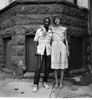
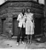

Photo Series: Lower West Side Revisited, 1984-1986
About This Series
"About ten years after I had completed the series on the Lower West Side Anne suggested I go back and see what had happened to the people I had photographed. If you go to the Lower West Side on a cold day the place seems deserted. But if you go there on a nice sunny day, everybody seems to be out on the street. It was just such a day that convinced us to go back and re-photograph the many individuals and families who continued to reside there. After many years of absence it was surprising how many people recognized us and greeted us with hugs and kisses." –Milton Rogovin
Related Publications
- Triptychs, Buffalo's Lower West Side Revisited, W.W. Norton, 1994
- From the Western Door to the Lower West Side, White Pine Press, 2009. Native American poet Eric Gansworth weaves his poetry with Milton Rogovin's Native American series.
- Picture Man: the Poetry of Photographer Milton Rogovin, [DVD] 19 min. 23 sec, 70 photographs, 17 poems, 2009
- Milton Rogovin: The Lens & the Pen: Photographs and Poems, Published by Palisade Press, 2009
- Milton Rogovin: The Forgotten Ones, University of Washington Press, 1985; Quantuck Lane Press, 2003
- The Bonds Between Us: Family Portraits From Around The World, White Pine Press, 2001
- Milton Rogovin: The Making of a Social Documentary Photographer, University of Washington Press and the Center for Creative Photography, September 30, 2006
For curriculum and a folio download of the Lower West Side Revisited series, as well as a history of the neighborhood written by JoAnn Wypijewski, please visit the education page.


 
